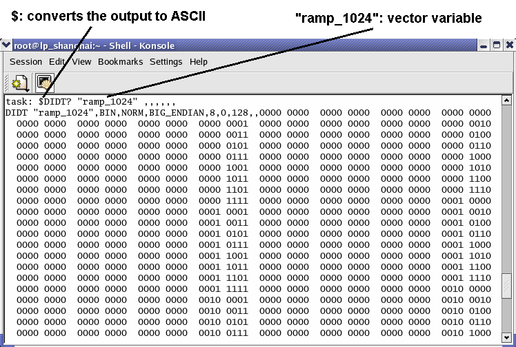

Retrieving Captured Data with Firmware Commands
After the capturing of data is complete, the DIDT? command must be used to retrieve (load) the data from the memory. A vector variable that specifies the exact data to be loaded must be provided as a parameter.
The DIDT? command returns the loaded data in a 32 bit format, reflecting the maximum number of 32 bits per sample.
Example1: The vector variable defines to upload the data of 8 capture pins in parallel, that is, each sample has 8 bits. Assumed that all captured bits were 1, the DIDT? command then returns (in ASCII format)
0000 0000 0000 0000 0000 0000 1111 1111
The first 24 bits are filled with zeros.
Example2: Now, the data that was captured serially at one pin is loaded. The number of bits per sample (Vectors per Sample in the "Setup Window for a Vector Variable") is defined as 12. Assuming that all captured bits were alternating 1 and 0, the DIDT? command then returns (in ASCII format).
0000 0000 0000 0000 0000 1010 1010 1010
The first 20 bits are filled with zeros.
The figure below shows how the results returned by a DIDT? command can be acquired using hpt.
